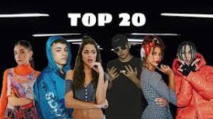
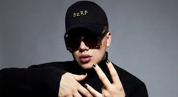

Más visitas
- 1 - Trueno (Freestyle Session) Bizarrap
- 2 - Nicki Nicole (Music Session)
- 3 - Alemán (Music Session) Bizarrap

Bizarrap

Gonzalo Julián Conde, conocido artísticamente como Bizarrap,
es un productor musical y DJ argentino.
Nominado a los Premios Grammy Latinos por mejor productor.
Se especializa en géneros como el trap,
la música electrónica y el hip hop.